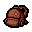

Item: The D6

- The D6 is a powerful item that allows you to reroll items in the game. It has a 6-room recharge.
- It can be used to reroll item pedestals, giving you a chance to find better items or remove unwanted ones.
- This item is crucial for creating powerful builds and breaking the game.
- There are many other dice items in the game, like the D4, which rerolls all the items that you've picked up.
- There are also other variations of the D6 that have different effects.
The Eternal D6
- The Eternal D6 is a variation of the classic red D6.
- It allows for rerolls but has a 50% chance to delete the item instead.
- The game balances this with a 2-room recharge.
- The character, The Lost, starts with this item, even if it hasn't been unlocked yet.
The D-Infinity
- The D-Infinity is a very rare secret room item that acts as every dice item in the game.
- This is the ultimate dice item, putting both the D6 and Eternal D6 to shame.
- Charge time varies based on the current dice and updates when used.
- The only dice that it doesn't mimic is the Spindown Die.
The Spindown Die
- The Spindown Die is very unique in how it rerolls items.
- It takes the current item ID, subtracts 1 from it, and rerolls into the item with that item ID minus 1.
- This makes for a very powerful item, especially when looking for specific items when combined with elite game knowledge (or mods).
- Some useful knowledge: Chopsticks spindown into Sacred Heart, and Blood Bag spins down to Brimstone. Those are two very common items to find as well.
Game Breaking Item: School Bag

- The School Bag allows you to hold two items in your item slot.
- This allows you to hold two dice items, such as the D6 and the Spindown Die.
- What's more powerful is having an item that can produce multiple charges for your dice.
Game Breaking Item: The Clear Rune
- This break used to be achievable with the item Blank Card instead, but has since been replaced with Clear Rune.
- The Clear Rune allows you to use cards and runes without consuming them.
- When combined with School Bag, you can hold both this and your dice.
- Probably the most classical game break requires this and two other items: a Jera rune and a battery.
- The Jera rune duplicates all pickups on the floor (i.e., the battery), and the Clear Rune can do this without losing your rune.
- To achieve the break, you must duplicate the battery with your Clear Rune, then recharge your Clear Rune with either room charges or a different battery you aren't duplicating, in order to create enough batteries to not worry about running out of charge.
- Do this on the Chest floor to duplicate batteries AND the gold chests. Chests on the Chest floor always contain an item, so duplicating the chests means more items, which means more breaking.